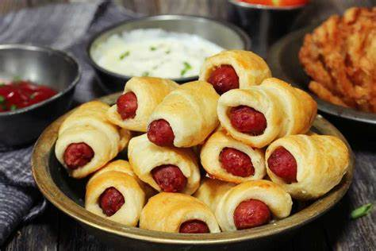

Best Banana Pudding

Ingredients
- Biscuit dough:
This easy recipe starts with a 10-ounce package of
refrigerated biscuit dough.
- Cheese: Sliced American cheese is an optional ingredient,
but we recommend it.
- Frankfurters: If you can’t find authentic frankfurters,
any hot dog will do. For a bite-sized version, use cocktail sausages.
Steps
- Shape the dough into circles.
- Lay a slice of cheese on each circle, place a frankfurter on each slice, and roll it up.
- Place rolls, seam-side down, on a cookie sheet and bake until golden brown.